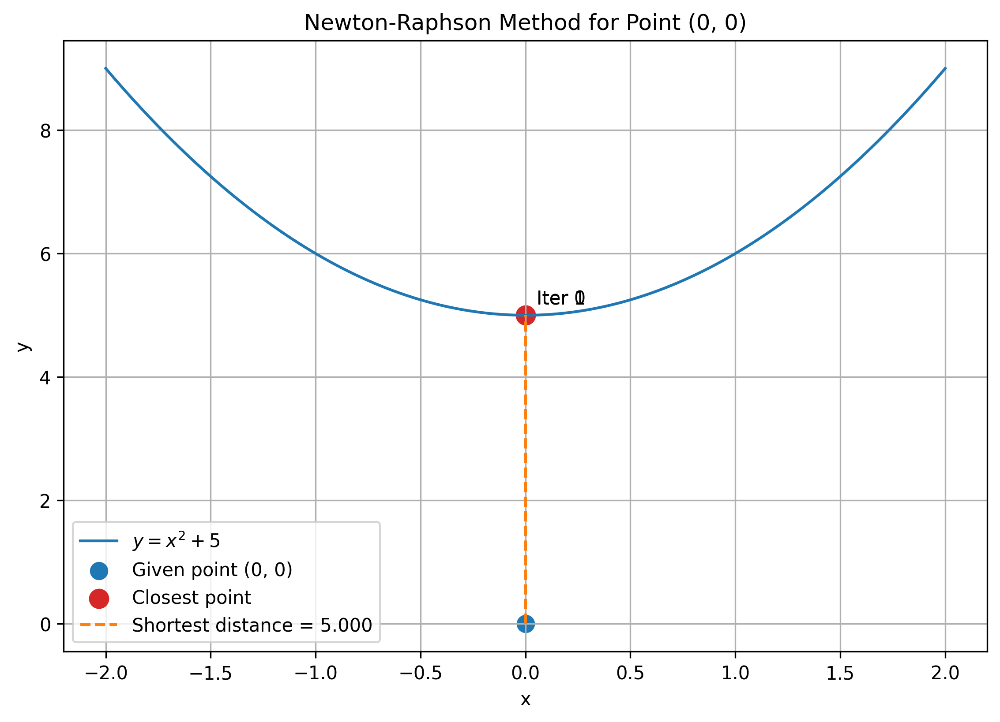
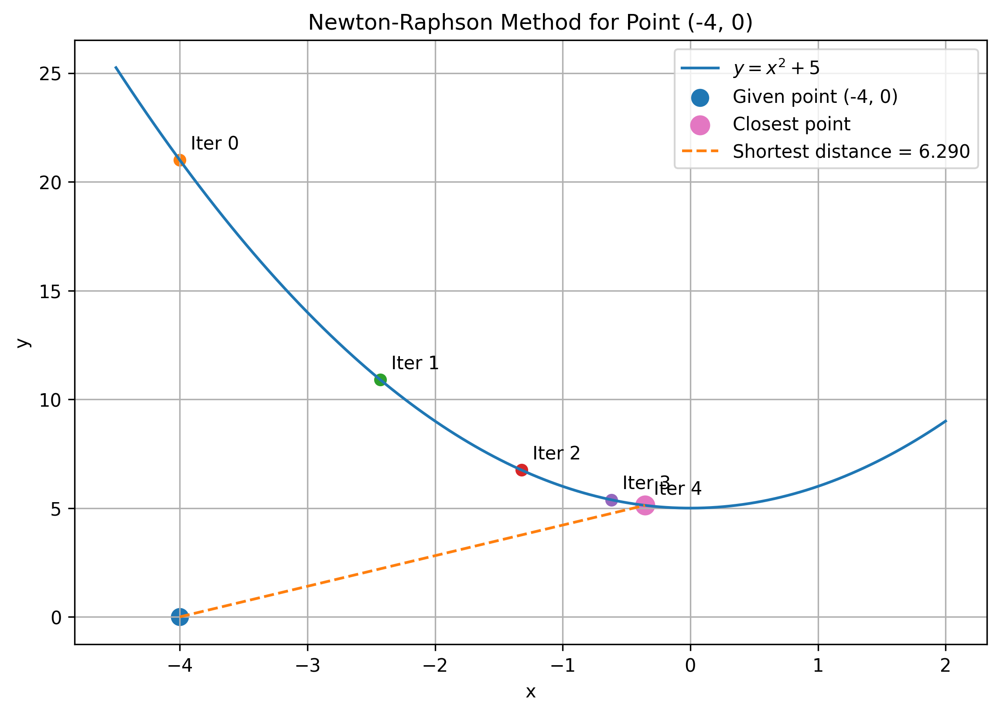
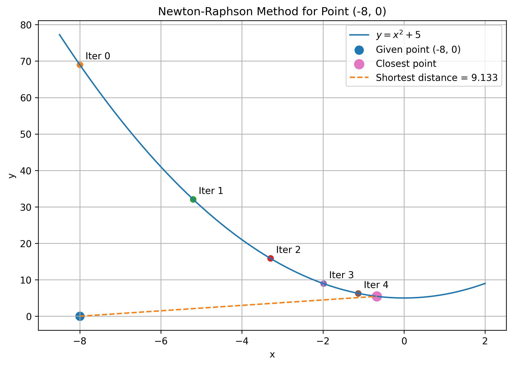
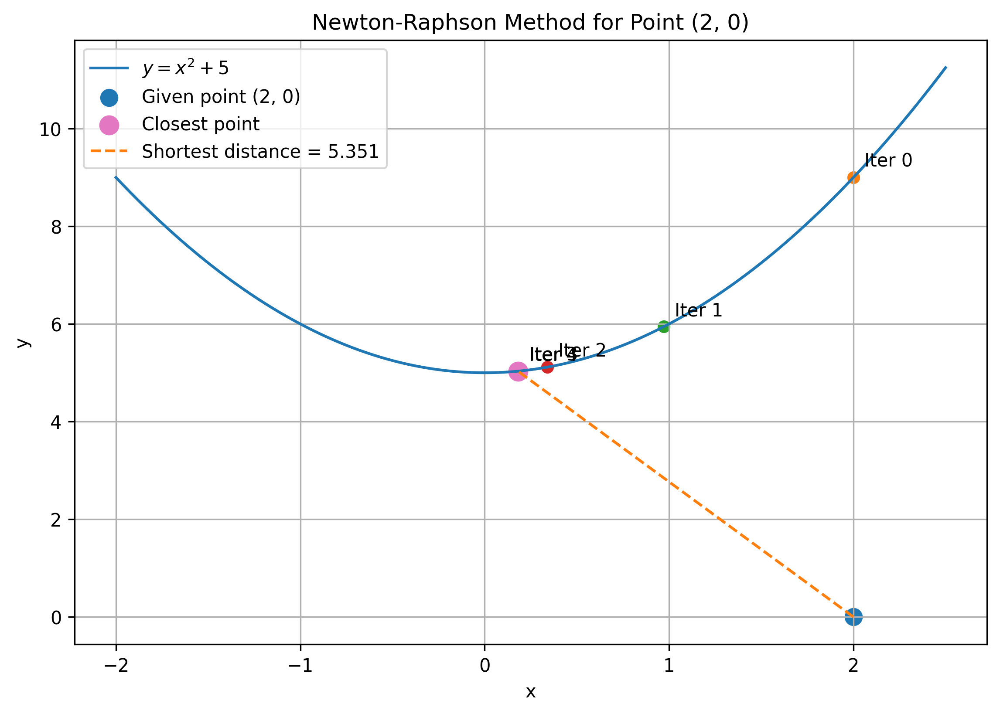
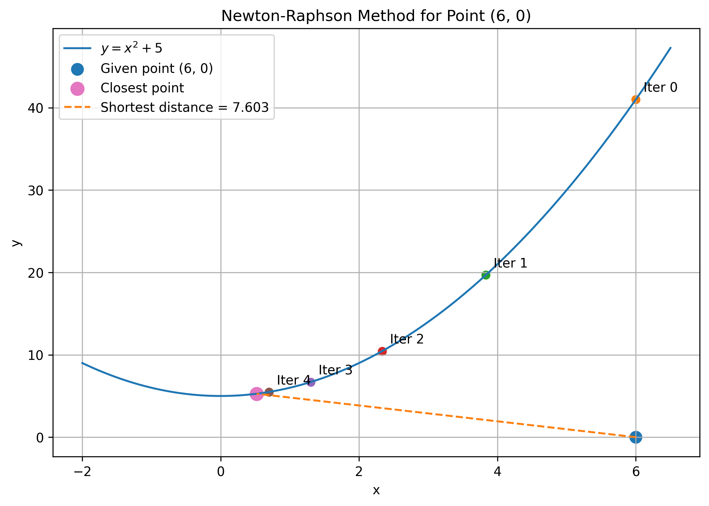
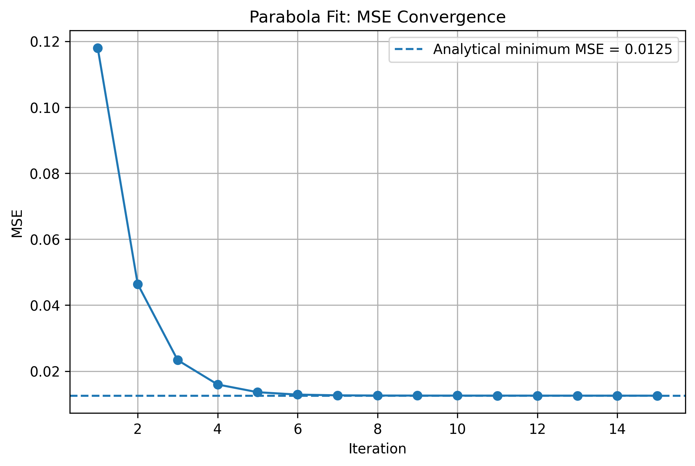

Optimization methods for shortest distance to a function and least-squares function fitting
Zoey Yang
PART ONE
Shortest Distance from a Point to a Function
The objective is to determine the shortest Euclidean distance from a given point
\((x_0,y_0)\) to a continuous function \(y=f(x)\). I solve the problem analytically
and numerically using Newton–Raphson and Golden Section Search.
Objective Function
For a point \((x,f(x))\) on the curve, the squared Euclidean distance is
\[
D(x)=(x-x_0)^2+(f(x)-y_0)^2.
\]
Minimizing \(D(x)\) is equivalent to minimizing the actual distance
\(d(x)=\sqrt{D(x)}\), because the square root is monotonically increasing.
\[
D(x)=(x-x_0)^2+(x^2+5)^2.
\]
\[
D'(x)=2(x-x_0)+4x(x^2+5).
\]
\[
D'(x)=4x^3+22x-2x_0.
\]
Setting \(D'(x)=0\),
\[
\boxed{2x^3+11x-x_0=0}.
\]
Also,
\[
D''(x)=12x^2+22>0,
\]
so the critical point is the unique global minimum.
The required data points converge to the same minima as the analytical solution.
The figures below show the early iteration steps and final shortest-distance location.

Newton–Raphson for \((0,0)\).

Newton–Raphson for \((-4,0)\).

Newton–Raphson for \((-8,0)\).

Newton–Raphson for \((2,0)\).

Newton–Raphson for \((6,0)\).
Part 1 — Golden Section Search
Golden Section Search minimizes the squared-distance objective without requiring
derivatives. At every step the search interval is reduced using the golden ratio,
retaining the subinterval containing the smaller objective value.
Fitting Functions by Minimizing Mean Squared Error
The data points are
\[
(0,0.5),\quad(2,3.5),\quad(1,1.5),\quad(3,7.5).
\]
A line and a parabola are fitted by minimizing mean squared error (MSE).
I solve each problem analytically and then reproduce the result numerically
using sequential Newton–Raphson parameter updates.
For \(n=4\) data points,
\[
MSE=\frac{1}{4}\sum_{i=1}^{4}(\hat y_i-y_i)^2.
\]
Starting from \(m_0=0\) and \(b_0=0\), the slope is updated first while
holding the intercept fixed. The intercept is then updated using the new slope.
Starting from \(a_0=b_0=c_0=0\), each coefficient is updated in sequence.
The newest coefficient values are used immediately in the next parameter update.
Intermediate Newton–Raphson parabola fits for iterations 0–3 and the final fit.

Early numerical convergence toward the analytical minimum
\(MSE=0.0125\). Iteration 0 is omitted from this convergence view
to make the later decrease visible.
Because the MSE is quadratic in its coefficients, a full Hessian-based
multivariate Newton step would behave differently. Here the parameters are
updated sequentially to follow the parameter-by-parameter procedure used in
this assignment.
Both numerical procedures converge to the corresponding analytical
least-squares solutions. For these four data points, the parabola produces a
much smaller MSE than the line because its additional curvature better represents
the observed data.